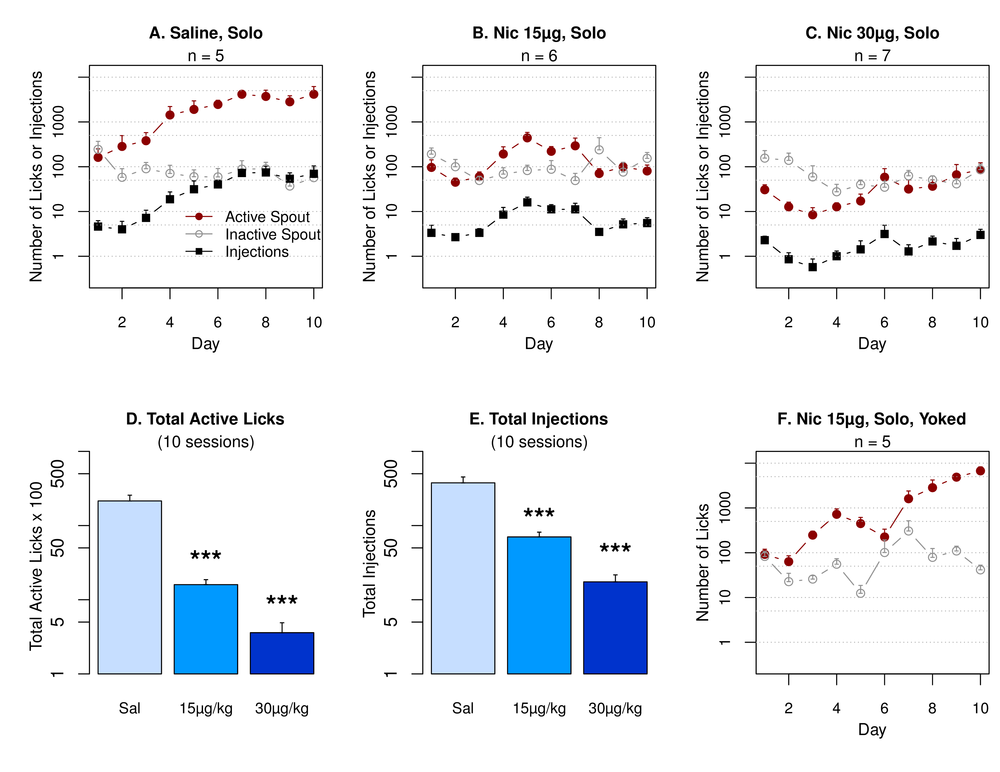
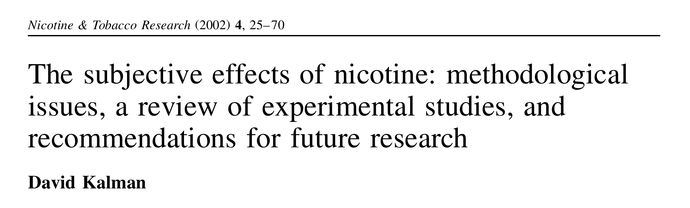
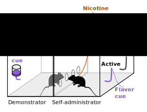

Hao Chen Lab Introduction
Sept 1 2015Socially-acquired nicotine self-administration
Nicotine self-administration with flavor cue


Flavor cue does not support nicotine self-administration
Initial smoking experience
 Coughing, nausea, dizziness, sickness, burning throat, headache
Coughing, nausea, dizziness, sickness, burning throat, headache

Nicotine induces drug high only in significantly nicotine-deprived smokers. Nicotine is primarily aversive in non-smokers and ex-smokers.
Social environment influences smoking behavior


Social learning induces nicotine self-administration
Familiar vs. stranger peer

What is the social signal?
Olfactory but not gustatory cue is required

CS2 and flavor cue

Current projects
- Genome-wide association study of socially-acquired nicotine IVSA
- Menthol cue for nicotine IVSA
- Alcohol self-administration
- CRISPR knockout rats for chrna5-chrna3-chrnb4 and chrna4
Technologies
- Genome and Transcriptome sequencing
- The use of single board computer in behavioral tests
- In vivo electrophysiology
- Epigenetics
Computation and bioinformatics
- Command line (Linux or Mac OSX) for bioinformatics
- R for statistical data analysis
- Python for single board computer
Operant chamber setup
